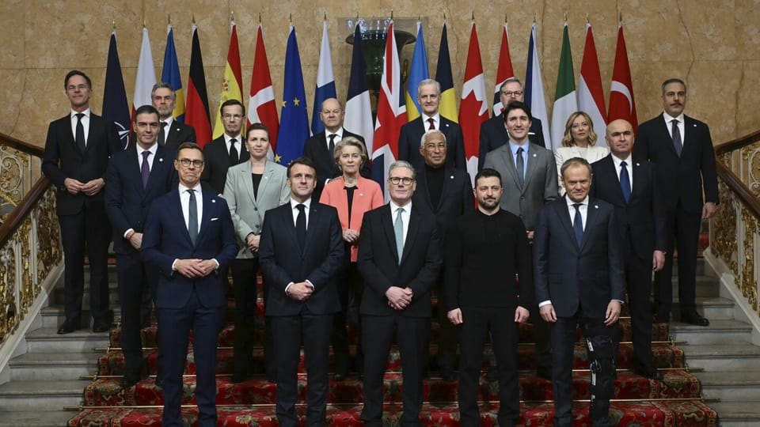

世界苦茶03月03日新闻 | 32条 | 英法开始主导俄乌战争调停

英法开始主导俄乌战争调停 | 美国消费者支出两年来首降 | 特朗普宣布加密货币列入战略储备 | 马斯克与众议员开始炒作退出北约议题
透明茶室
苦茶数据
美元兑人民币：7.29（昨日7.29，前日7.29）
美元兑日元：150.38（昨日150.62，前日149.68）
上证指数：3332（昨日3320，前日3358）
标普500指数：休市（昨日5954，前日5956）
比特币：92760（昨日85978，前日85686）
布伦特原油：73.15（昨日72.81，前日73.66）
中国新闻
• 河南惩治诬告陷害，为3623名干部正名 ：河南开展惩治诬告陷害专项行动，为3623名干部澄清正名。河南省纪委微信公号“清风中原”星期五刊发河南省1月14日举行的十一届省纪委五次全会上的工作报告。报告指出，全省去年立案违反政治纪律案件596件、处分757人。聚焦突出问题靶向纠治。开展耕地保护、营商环境、城镇燃气管道设施“带病运行”等专项整治，督促相关职能部门强化监管、补齐短板。一体推进惩治金融腐败与防控金融风险。联合公安机关开展严厉打击工程招投标领域腐败和犯罪专项行动，发现问题线索1151件，处分176人。 （翻评：这种事情这么大规模，积极报道，我觉得可能不是很寻常。）
• 泰国决定遣返40名维吾尔族人至中国 ：泰国政府说，没有一个国家愿意接收申请政治庇护的40名维吾尔族人，所以泰国决定将他们遣返中国。《民族报》报道，泰国外交部副部长鲁斯星期天在脸书发文说，没有任何外国政府通过外交部向泰国发出正式请求，寻求接收那批维族人。“关于有人说第三国想接收维族人，我在此确认没有这回事。除中国政府外，没有其他国家向泰国发出接收他们的请求。”
• 全国政协会议议程公布，重点讨论政府报告 ：中国官方公布全国政协会议议程，听取并讨论政府工作报告将是主要议程之一。据新华社报道，星期六召开的中国全国政协常务委员会会议决定，中国人民政治协商会议第十四届全国委员会第三次会议于星期二在北京召开。建议会议的主要议程是：听取和审议中国人民政治协商会议全国委员会常务委员会工作报告和全国政协十四届二次会议以来提案工作情况的报告；列席中华人民共和国第十四届全国人民代表大会第三次会议，听取并讨论政府工作报告及其他有关报告。
• 塔利班否认中国控制阿富汗美军基地 ：塔利班官员否认唐纳德·特朗普总统最近关于中国控制阿富汗一个至关重要的前美国军事基地的断言。特朗普所指的巴格拉姆空军基地规模庞大，位于喀布尔以北约44公里处，曾作为美国领导20年的阿富汗军事行动的中央指挥部，直至2021年8月美国和北约部队全部撤出、塔利班反叛分子重新夺回政权。在被问及特朗普声称中国目前控制着这个空军基地时，塔利班发言人扎比乌拉·穆贾希德对官方广播公司回应说，“他们应该避免根据未经证实的信息发表情绪化的言论。”
亚太印太新闻
• 柯文哲解除禁见，首次与家人会面 ：台湾民众党前主席柯文哲暂时解除禁见后，首度与家人会面。综合中时电子报和台湾《上报》报道，柯文哲的妻子陈佩琪、胞妹柯美兰星期天上午9时到台北看守所进行第一次会面。由于星期天是台湾假日，按照看守所规定，本次会面时间仅有短短的八分钟。
• 气候变化威胁东南亚粮食安全 ：气候变化正对马来西亚及东南亚的粮食安全构成日益严峻的挑战，马国农业及粮食安全部长莫哈末沙布认为，区域国家应展开合作，以应对潜在的粮食短缺问题。莫哈末沙布指出，马国和东南亚域都容易受气候变化威胁，因此需加强区域合作。他举例说，马国过去的稻米产量为71％，如今已降至56％。“虽然我们白米库存足够维持至少六个月，但我们不知道气候变化会带来什么后果，所以粮食安全很重要。”莫哈末沙布说，地缘政治挑战、大米生产国的出口政策及极端天气，都可能会迅速扰乱国际市场供应，进而影响大米进口。其中，马国去年面临大米短缺，主要原因是印度因内部问题而暂停对外出口大米。
• 美军舰队抵达韩国釜山作战基地 ：多艘美国海军舰艇驶入韩国釜山作战基地，这是美国总统特朗普上台后美国航母首次抵达韩国。韩联社报道，韩国海军消息透露，美国卡尔·文森号核动力航母、普林斯顿号巡洋舰和斯特雷特号宙斯盾驱逐舰，星期天下午驶入海军釜山作战基地。这是继去年6月美国罗斯福号航母之后，美国航母再度抵韩。
• 泰国普吉岛加强移民审查打击非法活动 ：由于毒品犯罪和非法入境人数激增，泰国热门旅游地普吉岛与各国领事馆合作，加强移民审查和打击非法活动。《曼谷邮报》星期天报道，普吉岛移民警察局局长江盖说，去年有194名外国人在普吉岛被吊销签证，998人因犯罪活动面临驱逐出境，其中大部分与毒品犯罪有关，还有一些人未持有合法签证。普吉岛的移民局现在每两个月与国际领事官员举行一次会议，合力打击这些非法问题。江盖说，普吉当局要求入境者不得背负任何未执行的逮捕令，或是列入任何黑名单；入境者有责任证明自己携带足够现金，并且制定明确的行程。当局也在采取更多措施来核实入境者的住宿地点，并打击任何非法工作企图。
• 日本岩手县山火持续，逾千人撤离 ：日本东北部岩手县发生30年来最严重的山火，火势蔓延进入第五天，造成一人死亡，多个地区的数千名居民被迫疏散，撤离家园。官方星期日表示，当局已向超过4500名居民发出避难指示，约2000人自岩手县大船渡市附近地区撤离，投靠朋友或亲戚，另有超过1200人疏散到避难所。日本放送协会报道，岩手县估计，截至星期日上午6时，大火烧毁的面积已经扩大到约1800公顷。自3月1日上午至2日之间火势扩大了400公顷。
科技新闻
• 清华大学将重点培养AI+复合型人才 ：中国清华大学拟重点培养“AI+”拔尖创新人才，将成立新的本科通识书院，着力培养人工智能与多学科交叉的复合型人才。据新华社星期天报道，清华大学决定有序适度扩大本科招生规模，2025年拟增加约150名本科生招生名额，同时将成立新的本科通识书院，着力培养人工智能与多学科交叉的复合型人才，提升创新人才自主培养能力，以服务国家战略需求与社会发展需要。报道称，清华当前正深入推进人工智能相关专业人才培养，以期为国家高水平科技自立自强提供有力人才支撑，此次扩招本科生及成立新书院就是其中的重要措施。
• 特朗普宣布五种加密货币列入战略储备，价格飙升 ：美国总统特朗普在社交媒体上公布了他预计将纳入美国新加密货币战略储备的五种数字资产，使得这些数字资产的市值飙升。特朗普在Truth Social上发文称，他1月份发布的数字资产行政令将建立加密货币储备，其中包括比特币、以太币、XRP、Solana和Cardano。 （翻评：我这有点事后诸葛亮，但我一直觉得美联储不会在高峰时期购买加密货币，会主导导致加密货币大跌，在低点吸收进入储备，但这个确实没有证据，但在低点应该已经买了。）
财经新闻
• 美国对加墨关税生效，或提高中国关税 ：美国商务部长卢特尼克说，美国对加拿大和墨西哥征收的关税将按计划生效，美国总统特朗普将决定具体关税幅度。路透社报道，卢特尼克星期天接受福克斯新闻采访时说，美国对加拿大和墨西哥征收的关税将于星期二生效，但墨西哥和加拿大在边境问题上“做得不错”。不过，卢特尼克说，对中国的关税预计没有调整，特朗普相信将于星期二将对中国的关税从10%提高到20%，除非中国停止向美国贩运芬太尼，否则这个关税将保持不变。
• 中国官方强调加大对民企信贷支持 ：中国官方在围绕民营企业的座谈会上强调，要增加对民营和小微企业信贷投放，并支持民营企业通过资本市场发展壮大。中国人民银行星期天在微信公众号公布，中国人民银行、全国工商联、金融监管总局、中国证监会、国家外汇局上星期五联合召开金融支持民营企业高质量发展座谈会。座谈会上，依文集团、吉利控股、商汤科技、圆通速递、伊利集团五家民营企业及全联并购公会负责人介绍了企业经营情况并提出意见建议。工商银行、人保集团、中信证券、国担基金四家金融机构及上海证券交易所负责人作经验交流。
• 格力改名“董明珠健康家”，董明珠称全押上 ：中国家电巨头格力电器宣布，推出以董事长董明珠的名字命名的全新战略品牌“董明珠健康家”，董明珠回应时说，全部声誉砸进去，做不好就完蛋。据中国九派新闻星期六报道，格力电器董事长兼总裁董明珠在接受采访时回应称，“格力专卖店”改名为“董明珠健康家”别人会去研究是什么，改名“董明珠健康家”也是将自己的声誉全部砸进去了，做不好就完蛋了。格力电器2月13日发布全新战略品牌，把此前消费者熟悉的“格力专卖店”招牌撤下，换上“董明珠健康家”六个大字。格力多个官方直播间和社交平台也连夜改名。 （翻评：个人崇拜对企业也是灾难。）
• 复工复产带动中国2月官方制造业PMI超预期反弹，关注中美关税进展 ：政策落地见效叠加节后较快复工复产，中国2月官方制造业PMI超预期升至三个月高点，符合季节性水平。分项指数中生产指数和新订单指数均创10个月新高，表明供需两端皆有改善；尤其从业人员指数创22个月高位，吸纳就业人数有所回稳。
• 墨加想以禁毒努力免遭特朗普加征关税，中国则指责美"讹诈" ：加拿大和墨西哥周五试图向美国特朗普政府证明，在3月4日对两国进口商品征收25%惩罚性关税的最后期限到来之前，两国在遏制芬太尼流入美国方面取得了进展。周二将面临美国10%额外关税的中国则指责美国在芬太尼问题上搞"关税施压讹诈"，并警告称这只会适得其反。美国商务部长：特朗普周二将确定对墨西哥和加拿大加征的确切关税水平。
• 美国1月消费者支出近两年来首降，贸易逆差创新高 ：美国1月消费者支出近两年来首次下降，同时商品贸易逆差创历史新高，因企业为规避关税而提前进口商品。消费者支出下降0.2%，为2023年3月以来首降，也是近四年来最大跌幅，预估为增长0.1%。商品贸易逆差猛增25.6%，至1533亿美元，创纪录新高。1月PCE物价指数环比上涨0.3%，与12月涨幅持平，符合预期；PCE同比涨幅降至2.5%。核心PCE环比涨幅升至0.3%，同比涨幅降至2.6%。数据公布后，交易员押注美联储可能在6月重新开始下调短期借贷利率，并在9月再次降息。
俄乌战争
• 法英提议乌克兰战区停火一个月 ：法国和英国提议在乌克兰战争的空中、海上和能源基础设施前线停火一个月，欧洲短期内不会向乌克兰派遣维和部队。法新社报道，法国总统马克龙星期天告诉法国《费加罗报》，法英两国提出一项俄乌和平建议，要求在空中、海上和能源基础设施前线实施为期一个月的停火。马克龙在采访中说，至少计划初期不会涵盖地面临时停火，而且考虑到前线规模庞大，很难确保停火得到遵守。
• 马克龙斡旋美乌领导人，呼吁冷静 ：乌克兰总统泽连斯基与美国总统特朗普在白宫发生冲突后，法国总统马克龙分别与两人交谈，呼吁他们保持冷静。法新社报道，马克龙星期六接受法国报章《星期天论坛报》采访时说，他已与特朗普和泽连斯基进行交谈，事关重大，两位领导人都应该保持冷静和尊重，这样才能继续前进。马克龙强调，美国在乌克兰的任何不参与行为，都不符合美国利益，因为迫使基辅在没有安全保障的情况下签署停火协议，就意味着它同时丧失了威慑俄罗斯、中国和其他国家的能力。
• 拉夫罗夫称特朗普务实，批欧洲延长乌战 ：俄罗斯外交部长拉夫罗夫称赞美国总统特朗普旨在结束乌克兰战争的“常识”目标，并指责支持乌克兰的欧洲正在寻求延长冲突。路透社报道，拉夫罗夫星期天接受俄罗斯国防部机关报《红星报》访问时说，美国仍然希望成为世界上最强大的国家，美国和俄罗斯在许多问题上永远不会达成一致，但双方同意在利益一致时采取务实态度。他说：“特朗普是个务实主义者，他的口号是常识。正如每个人所看到的，意味着采取一种不同的方式来做事，但目标仍然是‘让美国再次伟大’。这为政治增添生动的人性特征。这就是为什么与他合作很有趣。”
• 英法拟组“志愿者联盟”保障乌克兰安全 ：在美国总统特朗普和乌克兰总统泽连斯基关系闹僵后，英国首相斯塔默说，英国和法国将领导一个“自愿者联盟”，为乌克兰提供安全保障，并制定结束与俄罗斯战争的计划。斯塔默星期天接受英国广播公司访问时说：“我们现在已经同意，英国和法国以及可能一两个其他国家，将制定一项停止战争的计划，并将与美国讨论计划。”他补充说，这很可能是一个由伦敦和巴黎领导的“联盟”，共同就安全保障进行合作，而不是整个欧洲。“我们必须弥合这个差距，必须找到一种让我们能够共同努力的方法，我们已经经历了三年的血腥冲突，现在我们需要实现持久的和平。”
• 或阻碍和谈共和党人暗示泽连斯基或不得不下台： 美国国家安全顾问沃尔兹暗示，如果乌克兰想要达成和平协议，领导人泽连斯基可能不得不下台。美国国家安全顾问沃尔兹在美国有线电视新闻网星期天的节目中说：“我们需要一位能够与我们打交道、最终可以和俄罗斯人打交道并结束这场战争的领导人。如果事实证明，泽连斯基总统的个人动机或政治动机，与结束战事背道而驰，那么我认为我们的确遇到了问题。”
• 英国工党领袖斯塔默表示欧洲正处于历史的十字路口，各国领导人同意采取措施实现乌克兰和平: 英国工党领袖基尔·斯塔默周日敦促欧洲各国领导人加强边境安全，全力支持乌克兰，并宣布了一个旨在终结俄罗斯战争的和平计划框架。斯塔默表示：“每个国家都必须尽己所能贡献力量，将不同的能力和支持带到谈判桌上，承担行动的责任，并各自承担起应尽的义务。” 就在斯塔默呼吁其他18位欧洲领导人为自己的安全承担更大责任的两天前，美国对乌克兰的支持出现了危机。前总统唐纳德·特朗普在白宫电视直播中严厉批评乌克兰总统泽连斯基，称其对美国的支持“缺乏足够感激”。 斯塔默利用此次机会，努力弥合欧洲与美国之间的裂痕，同时试图挽救在周五争吵之前刚刚显现出曙光的和平进程。
• 欧盟将协助乌克兰替代马斯克的 “星链” 服务： 据报道，在埃隆·马斯克威胁可能停止对乌克兰提供星链网络服务后，欧盟委员会正研究如何帮助乌克兰获得替代的卫星通信能力。卫星通信系统对乌克兰至关重要，但随着战争持续，马斯克是否继续提供星链服务尚不明确。去年乌克兰曾表示该国共有约42,000个星链终端，其中约一半由波兰出资。欧盟委员会发言人托马斯·雷尼耶表示，乌克兰已“表达兴趣”使用欧盟的Govsatcom系统，以及将于2030年代投入运行的新卫星星座IRIS²。他还表示：“欧盟委员会将继续就此与乌克兰保持联系。”
其他新闻
• 美国务卿签署40亿美元以色列军援计划 ：美国国务卿鲁比奥签署声明，加快向以色列提供约40亿美元军事援助。路透社报道，鲁比奥星期六签署一份声明文件，动用紧急授权，加快向以色列提供约40亿美元的军事援助。他指出，特朗普政府自1月20日上任以来，已经批准对以色列近120亿美元的军售计划，也将继续利用一切可用手段，履行美国对以色列安全的长期承诺。
• 以色列暂停加沙援助，哈马斯指责战争罪 ：以色列总理内坦亚胡宣布停止向加沙提供人道援助，哈马斯指责以方犯下“战争罪”。路透社报道，以色列星期天宣布，将暂停向加沙地带运送物资，并威胁称如果哈马斯不接受临时延长停火协议将“承担后果”。内坦亚胡办公室发声明说：“内坦亚胡决定所有货物和物资将暂停进入加沙地带……以色列不会接受不释放人质的停火协议。如果哈马斯坚持拒绝，将面对其他后果。”
• 埃及提交加沙重建计划，寻求国际支持 ：埃及外交部长阿卜杜勒阿提说，埃及加沙重建计划已准备就绪，将于3月4日举行的阿拉伯紧急峰会上提交，该计划确保巴勒斯坦人留在加沙。路透社报道，阿卜杜勒阿提星期天说，埃及的反击重建计划不仅是埃及或阿拉伯国家的计划，而是将获得国际支持和资金，以确保成功实施。 “一旦计划在即将召开的阿拉伯峰会上获得通过，我们将与主要捐助国进行密集会谈。”他说，欧洲在重建战火纷飞的加沙地区经济方面的作用至关重要。
• 伊朗财政部长因经济管理不善被罢免 ：伊朗议会投票罢免财政部长赫马提，原因是他管理经济不善，导致国家货币暴跌。路透社引述伊朗国家媒体报道，伊朗议会星期天对赫马提提出不信任动议，在场273名议员中，有182名议员投票支持罢免他，仅89名议员提出反对。伊朗总统佩泽希齐扬此前曾为赫马提辩护说：“我们正与敌人进行一场全面的经济战争……我们必须采取战时阵势。当今社会的经济问题并非某一个人的责任，我们不能把所有责任都归咎于一个人。”
• 美军向墨西哥边境增派近3000名士兵 ：美国军方向南部墨西哥边境增派将近3000名士兵，以进一步阻止非法移民和毒品流动。法新社报道，美国北方司令部星期六宣布，向南部边境部署大约2400名士兵，他们来自第2史崔克旅级战斗队，以及第4步兵师；同时部署约500名第3战斗航空旅士兵。这些士兵须执行检测、监控和后勤支持、医疗后送等任务。北方司令部司令吉洛特说，增派士兵的举措是为加强南部边境的灵活性和能力，从而进一步阻止非法移民和毒品流动。
• 特朗普要求调查进口木材影响国家安全 ：美国总统特朗普指示商务部，就进口木材对国家安全造成的危害展开调查，此举可能为征收新关税奠定法律基础。路透社报道，特朗普星期六签署一份备忘录，指示商务部长卢特尼克根据1962年《贸易扩张法》第232条，对美国进口木材展开国家安全调查。他也曾利用这项法规，对从全球进口的钢铝产品征收关税。白宫官员表明，调查范围包括由木材制成的衍生产品，例如橱柜等家具都有可能受到调查。商务部会加快调查进度，但并未给出具体时间表。
• 美国多地爆发反特斯拉示威，9人被捕 ：美国多地爆发呼吁“打倒特斯拉”的示威活动，纽约一家特斯拉门店外的集会有九人被捕。路透社报道，大批示威者星期六聚集在美国佛罗里达州、亚利桑那州等地的50多个特斯拉展厅，抗议老板马斯克带领政府效率部，应总统特朗普的要求大幅裁减联邦工作人员。纽约一家特斯拉门店外有数百人示威，九人被警方逮捕。示威者堵塞交通，挥舞着写有“烧毁特斯拉：拯救民主”和“美国不要独裁者”的标语。
• 美国参议员迈克・李、埃隆・马斯克呼吁美国退出北约： 美国参议员迈克・李与企业家埃隆・马斯克呼吁美国考虑退出北大西洋公约组织，即北大西洋联盟。此前，这位参议员曾称由美国和其他 31 个国家组成的北约联盟为 “冷战的遗迹”。迈克・李表示，北约联盟应该停止存在，他将其描述为 “对欧洲来说是个好交易，对美国却是个亏本买卖”。同样地，科技巨头埃隆・马斯克也在周六晚上的 X推特贴文中，公开支持美国退出北约的观点。